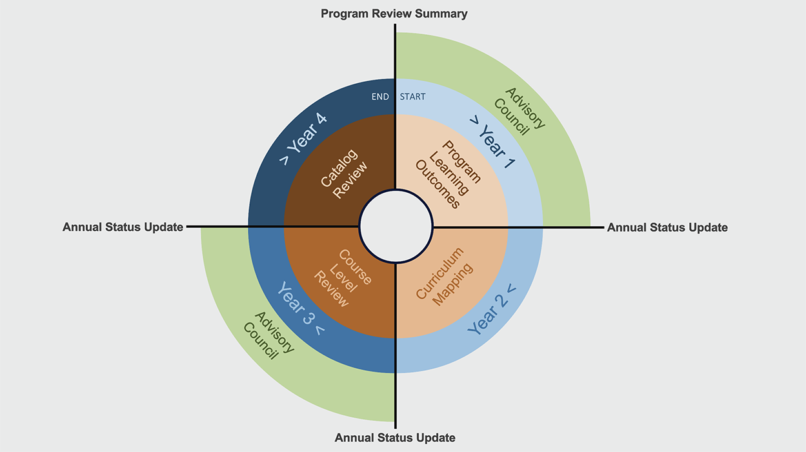

Program Review Cycle
Click on each year's icon for more information
Year 1
PLOs
Program Mapping
Year 2
CLOs
Year 3
Assessments
Year 4
Review
Vision & Planning
(Year 4)
- Computer Science & Engineering
- Chemistry
(Year 3)
- Mechanical & Civil Engineering
- Physics
(Year 2)
- Design & Construction Management
- Geology & Environmental Sciences
(Year 1)
- Engineering Tech
- Math
